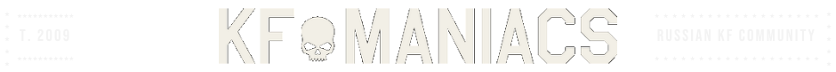

Beta testing
Our servers
KF-Maniacs is a Killing Floor community. You need KFM Companion so Steam keeps your stats and achievements after you play on our server.
- Start Steam and sign in.
- Download and run KFM Companion.
- Launch Killing Floor as usual.
- Leave Companion running while you play. It writes to Steam after you quit the game.
Steam must be running.
Google and Windows Defender may warn about KFM Companion. This is a false positive. The program is open source and legitimate. It is based on Steam Achievement Manager and does nothing harmful. Source code